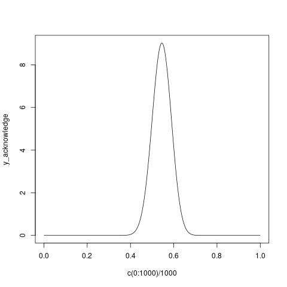
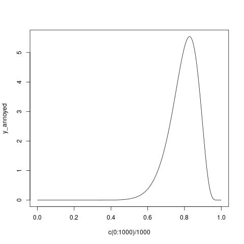

factive-projection
Table of Contents
1. Replication of Degen and Tonhauser 2021
We specifically replicated MTurk experiments 2a and 2b, which divided a norming task and a task assessing presupposition projection into two different experiments.
1.1. The norming experiment
- The goal of this experiment, for Degen and Tonhauser (2021), was to gauge
prior certainty about the truth of the complement clauses featured in their
projection experiment.
- 20 clauses, each associated with 2 possible background facts: 40 items, divided into two 20-item lists.
We replicated this experiment with 100 participants to obtain 50 data points per item. We are left with 93 after pre-processing data, for around 46 or 47 data points per item. Degen and Tonhauser (2021) were left with 75 participants after pre-processing.
Figure 1: By-item means for the Degen and Tonhauser 2021 complement-clause + fact norming experiment vs. our replication. Red indicates low-probability items, and green, high-probability items. Spearman's rank correlation of 0.98 (p < 2.2e-16).
1.2. The projection experiment
- This experiment aims to assess the degree to which a predicate's complement
clause projects when embedded within a question.
- 20 predicates, each paired with one of the 40 contexts from the norming experiment (so, 800 items).
- The predicates tested are exactly those featured in
Degen and Tonhauser 2022:
- ``canonically factive'': be annoyed, discover, know, reveal, see
- ``non-factive'': pretend, say, suggest, think, be right, demonstrate
- ``optionally factive'': acknowledge, admit, announce, confess, confirm, establish, hear, inform, prove
We are still in the process of replicating this experiment (going for 1000 participants). Here is a plot comparing our by-item mean ratings with those of Degen and Tonhauser 2022, using a 750-participant subset of our data (yielded after data pre-processing). Degen and Tonhauser (2021) were left with 266 participants' worth of data after pre-processing.
Figure 2: By-item means for the Degen and Tonhauser 2021 projection experiment vs. our replication. Spearman's rank correlation of 0.76 (p < 2.2e-16).
By-predicate means for the same data:
Figure 3: By-predicate means for the Degen and Tonhauser 2021 projection experiment vs. our replication. Red indicates ``non-factives'', blue, ``optional factives'', and green, ``canonical factives''. Spearman's rank correlation of 0.98 (p < 2.2e-16).
- All discussion to follow is based on the data from our replication.
2. Theories of gradience
- Due to the lack of any potential principled cut-off in projectivity ratings between factive and non-factive predicates, Degen and Tonhauser (2022) argue that their results make any theoretical distinction between the two arbitrary.
- Our study investigates the possibility that there is such a distinction to be made, and that factivity is still an essentially categorical phenomenon; that is, that a predicate, on some use, is either factive or non-factive.
- To investigate this possibility systematically, we need a theory of
gradience: how could gradient inference-judgment data possibly arise from
grammatical representations, e.g., determing a predicate's semantic
properties?
- How does gradient behavior manifest when these grammatical representations are discrete vs. when they are themselves gradient (in senses to be made precise).
2.1. Probabilistic programs
2.1.1. Definition of a probabilistic program (Grove and Bernardy 2022)
- Let's say \(r\) is the type of real numbers.
- For any type \(Œ±\), a probabilistic program \(m\) of type \((Œ± → r) → r\) —
abbreviated \(\mathtt{P}(Œ±)\) — returns values of type \(Œ±\).
- \(m\) consumes a projection function: some \(f\) of type \(α → r\).
- \(m(f)\) is an \(r\); its meaning is the result of summing \(f\) over the possible values \(x\) of type \(α\), weighting each \(f(x)\) by the probability of \(x\).
- Example
\[\begin{align*} &\texttt{m} &&: e \tag{`Ming'}\\ &\texttt{ck} &&: e \tag{`Chris'}\\ =\ \ &λf.(0.3 * f(\texttt{m})) + (0.7 * f(\texttt{ck})) &&: \mathtt{P}(e) = (e → r) → r \end{align*}\]
- The probabilistic program that returns Ming with probability 0.3 and Chris with probability 0.7.
- Another example: \(\mathcal{N}(μ, σ) : \mathtt{P}(r) = (r → r) → r\)
- Represents a normal distribution with mean \(μ\) and standard deviation
\(σ\).
\[\mathcal{N}(μ, σ) = λf.\int_{-∞}^∞\text{PDF}_{\mathcal{N}(μ, σ)}(x) *
f(x) dx\]
- Result: the weighted average (i.e., expected value) of \(f(x)\) across the normally distributed values \(x\).
- Represents a normal distribution with mean \(μ\) and standard deviation
\(σ\).
\[\mathcal{N}(μ, σ) = λf.\int_{-∞}^∞\text{PDF}_{\mathcal{N}(μ, σ)}(x) *
f(x) dx\]
2.1.2. Assembling and using probabilistic programs
We would like to be able to build probabilistic programs representing natural language meanings. This requires:
- somehow turning ordinary logical meanings into probabilistic programs
- somehow composing probabilistic programs together, similar to how we compose ordinary natural language meanings (e.g., by functional application)
2.1.3. Some nice things about probabilistic programs (pt. 1)
- You can turn any value (of any type \(α\)) into a trivial probabilistic program that returns just that value: \[\begin{align*} η &: α → \mathtt{P}(α) &\text{(`pure')} \\ η(a) &= λf.f(a) \end{align*}\]
2.1.4. Some nice things about probabilistic programs (pt. 2)
Given programs
- \(m : \mathtt{P}(α → β)\)
- \(n : \mathtt{P}(α)\)
You can compose \(m\) and \(n\) by feeding the values returned by \(n\) to the functions returned by \(m\). \[\begin{align*} (⊛) :\ &\texttt{P}(α → β) → \texttt{P}(α) → \texttt{P}(β) \\ m ⊛ n =\ &λf.m(λx.n(λy.f(x(y)))) \end{align*}\]
``Run \(m\) to compute \(x\). Then run \(n\) to compute \(y\). Then apply \(x\) to \(y\).''
2.1.5. Computing probabilities
- Given a probabilistic program \(m\) of type \(\mathtt{P}(t)\) (i.e., returning
truth values), we may use it to compute a probability:
\[\begin{align*}
Pr &: \mathtt{P}(r) → r \\
Pr(p) &= \frac {p(ùüô)} {p(Œªb.1)}
\end{align*}\]
- \(ùüô : t → r\) is an indicator function:
- \(ùüô(‚ä§) = 1\)
- \(ùüô(⊥) = 0\)
- In the above, it picks out the mass assigned to \(⊤\).
- \(p(λb.1)\) is the measure of \(p\): it is \(p\)'s total mass.
- So, \(Pr(p)\) is the probability that \(p\) returns \(⊥\).
- \(ùüô : t → r\) is an indicator function:
- Example: probabilistic semantics for vagueness
- A degree-based semantics:
- \(⟦\) the coffee \(⟧ = \texttt{coffee} : e\)
- \(⟦\) is expensive \(⟧ = λx.\texttt{cost}(x) ≥ d : e → t\)
- \(⟦\) the coffee is expensive \(⟧ = ⟦\) is expensive \(⟧(⟦\) the coffee \(⟧) = \texttt{cost}(\texttt{coffee}) ≥ d : t\)
- Probabilistic upgrade:
- \(\texttt{Costs} : \mathtt{P}(d)\)
- Takes some function \(f\) mapping degrees of cost (say, dollar values) to real numbers, and integrates it over the (positive) real line, weighting each \(f(d)\) by the probability associated with degree \(d\).
- For simplicity, we can assume the possible values of cost are finite:
\[\texttt{Costs} = λf.\sum_{d = 0}^\text{max cost}
\text{PMF}_{\texttt{Costs}}(d) * f(d)\]
- Let's say \(\texttt{Costs}\) assigns non-zero probability to anything from $1 to $20: \[λf.\begin{cases} \frac{0.3}{20} * f(d) & d ∈ [1, 5] \\ \frac{0.7}{20} * f(d) & d ∈ [6, 20] \\ 0 & \text{otherwise} \end{cases}\] \[= λf.(\sum_{d=1}^{5}\frac{0.3}{20} * f(d) + \sum_{d=6}^{20}\frac{0.7}{20} * f(d))\]
- Say we want to know the mean cost (i.e., the expected value of \(x\)). We can feed \(\texttt{Costs}\) the identity function: \[\texttt{Costs}(λx.x) = \begin{cases} \frac{0.3}{20} * d & d ∈ [0, 5] \\ \frac{0.7}{20} * d & d ∈ [6, 20] \\ 0 & \text{otherwise} \end{cases}\] \[= \frac{0.3}{20} * 15 + \frac{0.7}{20} * 195 = 7.05\]
- Let's say we want the probability that a cost is between 3 and 5 (inclusive). We can feed \(\texttt{Costs}\) the function \[Œªd.ùüô(d ≥ 3 ‚àß d ‚⧠5)\] which is of type \(r → r\): \[\mathtt{Costs}(Œªd.ùüô(d ≥ 3 ‚àß d ‚⧠5)) =\] \[\begin{cases} \frac{0.3}{20} * ùüô(d ≥ 3 ‚àß d ‚⧠5) & d ∈ [1, 5] \\ \frac{0.7}{20} * ùüô(d ≥ 3 ‚àß d ‚⧠5) & d ∈ [6, 20] \\ 0 & \text{otherwise} \end{cases}\] \[= \frac{0.3}{20} + \frac{0.3}{20} + \frac{0.3}{20} = 0.045\]
- \(⟦\) the coffee \(⟧ = η({\color{green}\texttt{coffee}}) : \mathtt{P}({\color{green}t})\)
- \(⟦\) is expensive \(⟧ = \texttt{Costs}(λd.η({\color{green}λx.\texttt{cost}(x) ≥ d})) : \mathtt{P}({\color{green}e → t})\)
- \(⟦\) is expensive \(⟧ ⊛ ⟦\) the coffee \(⟧ = \texttt{Costs}(λd.η({\color{green}\texttt{cost}(\texttt{coffee}) ≥ d})) : \mathtt{P}({\color{green}t})\)
- \(\texttt{Costs} : \mathtt{P}(d)\)
- A degree-based semantics:
2.2. Applicative functors
- Viewed as a kind of type constructor (i.e., a map from types to types),
\(\mathtt{P}\) is what is known as an applicative functor
(McBride and Paterson 2008).
- A map \(\mathtt{A}\) from types to types, equipped with two operators:
- \(η : α → \mathtt{A}(α)\)
- \((⊛) : \mathtt{A}(α → β) → \mathtt{A}(α) → \mathtt{A}(β)\)
- These operators must satisfy certain laws.
- A map \(\mathtt{A}\) from types to types, equipped with two operators:
- The fact that \(\mathtt{P}\) is an applicative functor allows us to employ it in a theory of gradience, as observed in, e.g., experimental settings, like the Degen and Tonhauser (2021) one.
Why? Because applicative functors compose! If \(\mathtt{A}(α)\) is an applicative functor, and \(\mathtt{B}(α)\) is an applicative functor, then \(\mathtt{A}(\mathtt{B}(α))\) is also an applicative functor.
- We may therefore compose \(\mathtt{P}(α)\) (our probability applicative
functor) with itself, to get another applicative functor
\(\mathtt{P}(\mathtt{P}(α))\).
- \(\mathtt{P}(\mathtt{P}({\color{green}α}))\): the underlying type \(α\) still represents values.
- \(\mathtt{P}({\color{green}\mathtt{P}}(α))\): the inner \(\mathtt{P}\) represents a probability distribution over these values, which can be used to encode trial-level uncertainty; i.e. the values people enter on those sliders.
- \({\color{green}\mathtt{P}}(\mathtt{P}(α))\): the outer \(\mathtt{P}\) represents a probability distribution over these probability distributions. It can be used to encode population-level, or experiment-level, uncertainty; i.e., the distribution of values people enter on those sliders.
- We can thus develop — and experimentally test — theories that encode certain claims about experiment-level vs. trial-level uncertainty.
- Specifically, we can ask: is the phenomenon of gradient presupposition projection an artifact of experiment-level uncertainty combined with a non-gradient (i.e., binary) projection mechanism on individual trials? Or does the gradience observed reflect of a truly gradient underlying phenomenon?
- In practice, this means fitting models that encode each theory to the experimental data and then comparing them. For the Bayesian models under consideration, which produce posterior samples, we use the Widely Applicable Information Criterion (WAIC).
- We may therefore compose \(\mathtt{P}(α)\) (our probability applicative
functor) with itself, to get another applicative functor
\(\mathtt{P}(\mathtt{P}(α))\).
2.3. Theories of projection
- A bit of notation: instead of writing expressions like \[m ⊛ n\] I'll write them as \[\begin{align*} &x ∼ m \\ &y ∼ n \\ &η(x(y)) \end{align*}\] to make it look like we are specifying a model (which we are!).
- The categorical-projection theory says that the complements of purportedly factive predicates either project or do not project on individual experimental trials.
- In addition, we should take into account the independent contribution of the prior distribution associated with the complement clause.
2.3.1. The categorical-projection theory
- Example: X knows that Julian dances salsa (where Julian is Cuban/German).
- \(\texttt{JDS} : \mathtt{P}(r)\)
- Some prior probability over probabilities that Julian dances salsa (given that he is Cuban/German).
- \(\texttt{knowsJDS} : \mathtt{P}(r)\)
- Some prior probability over probabilities that the complement of know (that is, Julian dances salsa) projects.
- Then the categorical-projection model can be given as:
\[\begin{align*}
&c ∼ \texttt{JDS} \\
&p ∼ \texttt{knowsJDS} \\
&τₚ ∼ \texttt{Bernoulli}(p) \\
&η ( τ_c ∼ \texttt{Bernoulli}(c); η(τₚ ∨ τ_c) )
\end{align*}\]
- This is just a probabilistic program of type
\(\mathtt{P}(\mathtt{P}(t))\). It uses Bernoulli distributions:
\(\texttt{Bernoulli}(x)\) returns \(⊤\) with probability \(x\) and \(⊥\) with
probability \(1 - x\).
- The outer \(\mathtt{P}\) encodes experiment-level uncertainty. We don't know whether, on any given trial, the subject interpreted the predicate know as triggering a projective inference.
- The inner \(\mathtt{P}\) encodes trial-level uncertainty. We are assuming here that there is prior uncertainty for each subject, reflected on each trial, about whether Julian is likely to dance salsa, given that he is Cuban/German.
- Finally, all it takes to get the inference that Julian dances salsa is for the prior to make it true or for the predicate to trigger projection; thus the disjunction.
- This is just a probabilistic program of type
\(\mathtt{P}(\mathtt{P}(t))\). It uses Bernoulli distributions:
\(\texttt{Bernoulli}(x)\) returns \(⊤\) with probability \(x\) and \(⊥\) with
probability \(1 - x\).
- \(\texttt{JDS} : \mathtt{P}(r)\)
2.3.2. The gradient-projection theory
- Example: X knows that Julian dances salsa (where Julian is Cuban/German).
- The model here is very similar, except that we slide the projection sampling statement underneath the outer \(\mathtt{P}\). \[\begin{align*} &c ∼ \texttt{JDS} \\ &p ∼ \texttt{knowsJDS} \\ &η ( τₚ ∼ \texttt{Bernoulli}(p); τ_c ∼ \texttt{Bernoulli}(c); η(τₚ ∨ τ_c) ) \end{align*}\]
- This program is still of type \(\mathtt{P}(\mathtt{P}(t))\).
- Uncertainty about projection has just been downgraded to trial-level uncertainty.
3. Implementation
- Our implementations of these models use the Stan programming language. We can actually encode them fairly directly, often in terms of sampling statements like the above.
- Stan uses Hamiltonian Monte-Carlo sampling to do Bayesian inference.
- Models like the above are specified.
- They may then be fit using experimental data, given some likelihood function.
3.1. Our models
For both \(\texttt{JDS}\) and \(\texttt{knowsJDS}\) above, we assume logit-Normal distributions with fairly uninformative priors — \(\texttt{LogitNormal}(0, 1)\) — on their parameters. The prior means of these parameters give rise to the following distributions for both \(\texttt{JDS}\) and \(\texttt{knowsJDS}\):
Figure 4: Prior \(\texttt{LogitNormal}(0, 1)\) distribution for both \(\texttt{JDS}\) and \(\texttt{knowsJDS}\).
For the categorical model, the prior predictive response, before any Normal jittering is added, looks like this:
Figure 5: Prior predictive response before jittering.
- For each model, once a probability of Julian dancing salsa is determined, we use Normal distributions (truncated at 0 and 1) for our likelihood, with the justification that there is probably some random jittering noise in people's responses. These are given small — \(\texttt{HalfNormal}(0.05)\) — priors on their standard deviations (since we think people probably don't jitter too much).
3.2. Posterior inferences
- Nothing conclusive yet (unfortunately)!
- However, I will illustrate some of the posterior inferences made by the
categorical model, in particular, about the distributions over the tested
predicates' probabilities of triggering a projective inference.
- This model was fit on 1000 data points from each of the two experiments.
3.2.1. The norming experiment
- Example: Isabella ate a steak on Sunday, given that Isabella is a vegetarian
Figure 6: Distribution of probabilities that Isabella ate a steak on Sunday, given that Isabella is a vegetarian. Based on the mean posterior logit-Normal parameters.
- Example: Isabella ate a steak on Sunday, given that Isabella is from Argentina
Figure 7: Distribution of probabilities that Isabella ate a steak on Sunday, given that Isabella is from Argentina. Based on the mean posterior logit-Normal parameters.
- Example: Julian dances salsa, given that Julian is Cuban
Figure 8: Distribution of probabilities that Julian dances salsa, given that Julian is Cuban. Based on the mean posterior logit-Normal parameters.
- Example: Julian dances salsa, given that Julian German
Figure 9: Distribution of probabilities that Julian dances salsa, given that Julian is German. Based on the mean posterior logit-Normal parameters.
3.2.2. The projection experiment
- think
Figure 10: Distribution of probabilities that the complement of `think' projects.
- know
Figure 11: Distribution of probabilities that the complement of `know' projects.
- acknowledge

Figure 12: Distribution of probabilities that the complement of `acknowledge' projects.
- be annoyed

Figure 13: Distribution of probabilities that the complement of `annoyed' projects.